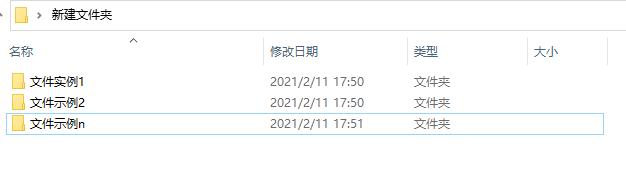

什么是Git，什么又是Github？
先说Git
与众人所熟知的githb不一样，git是一个软件，就如同你装在计算机里运行的所有其他软件一样，这是一个伟大的发明创造。
起源、定义
git的创造者是Linus Benedict Torvalds， 林纳斯先生的另一伟大创造就是Linux系统，而我们的主角Git也与Linux有着很深的联系，Git是为Linux专门打造的版本控制器。
综上我们现在有两个问题，什么是版本控制器？为什么Linux需要这个玩意？
先来解决第一个文题：什么是版本控制器？
版本控制器统称VCS(version control system)顾名思义，它就是用来控制版本的。如果你有玩过单机版RPG游戏，那么你一定会懂，在每次面对强大的boss时，你首先需要做的就是存档，当boss战对自己不利，或是消耗太多时，为了避免死亡，你可以选择读档，从之前你的存档处开始，既避免了死亡的惩罚，又不用像之前一样解决小怪。
版本控制器就是文件版的存档，当你在自己的计算机上完成某一个项目时，你可以借助VSC来实现版本的储存迭代，它会记录下每一次的版本内容，提交时间，你可以选择从现在跳回(Git中成为回滚)之前你储存的任何一个版本。
要做到以上，通常我们会这么做
这样会导致文件乱七八糟，如果起名不规则，还会导致文件错乱。但如果运用Git，文件夹中只会有一个文件，但却保存所有的文件版本。以上过程都在你自己的本地计算机中进行，叫做local VSC，Git当然能做到，但它做到的不仅于此。
我们先解决第二个问题：为什么Linux需要Git？
我在此对Linux不多作介绍，读者若对此没有概念，那请 一定 学习有关于它的相关资料，Linux是开源的操作系统，既然是开源的就会有杰出的程序员、黑客为它做出贡献，但是这就涉及到一个问题，我们该如何将这些代码片段合成来实现Linux的更新呢？原来的方法，是由林纳斯手动填补，但这样效率低下，重复劳动大，自2002年起，Linux开始使用Bitkeeper(一个商用软件)作为版本控制器，来实现版本更新，这是怎么实现的？我们借此机会介绍版本控制器的另外两种模式：Centralize VCS 和 Distributed VCS。
Centralize VCS由一个数据中心和多个开发者构成，所有的数据、文件等都存储且仅存储在数据中心中，开发者负责对数据中心中的文件进行创建debug等。这样的好处是管理数据中心者具有绝对的权限，他可以指定每一个开发者的权限，设定他能看到多少内容。但这样做却冒着巨大的风险，一旦数据中心遭到攻击或是出现系统故障，所有人的工作都有在一瞬间化泡影的风险。Distributed VCS填补了这样的问题。
它将原本的Local VSC与Centralized VSC相结合，它在每个人的计算机包括中心数据库上都建立了数据库，存放了自初始到最终版本中每一个文件版本，每个人都可以将自己的工作发布上传到中心数据库，看到文件更新的人都可以从数据中心下载保存在自己的计算机之中，在此基础上再做贡献。Git就是帮助我们实现这一切的软件，而我们使用Git上传到的数据中心，就是大名鼎鼎的Github。
回到那段历史，Bitkeeper一直为Linux提供服务，直到2005年，该公司与Linux社区一众黑客决裂，相传原因是有人尝试对Bitkeeper进行破解(就是把人家的正版软件盗版化。顺带一提，Bitkeeper一直无偿为Linux社区提供服务。)没办法，社区们的诸位以林纳斯先生为首，于2005年推出了Git，来帮助Linux进行版本更新，代码补充。今天，Git不再单单是Linux的专属软件，它为windows、Linux、Mac等系统提供 无偿的、开源的服务。而在2016年原本作为商业软件的Bitkeeper，宣布对外开源。
参考资料：
bitkeeper官网： https://www.bitkeeper.org/
Git官网：https://git-scm.com/
Progit written by Scott Chacon and Ben Straub